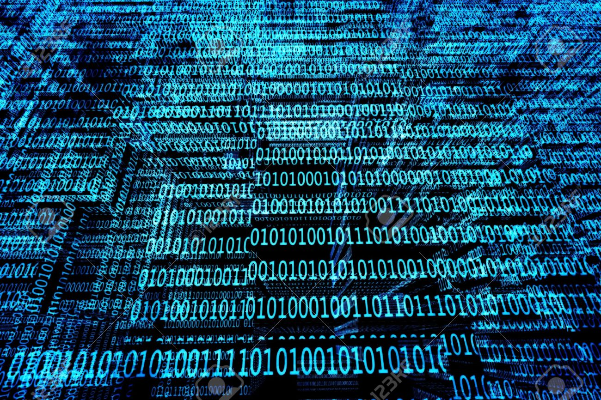
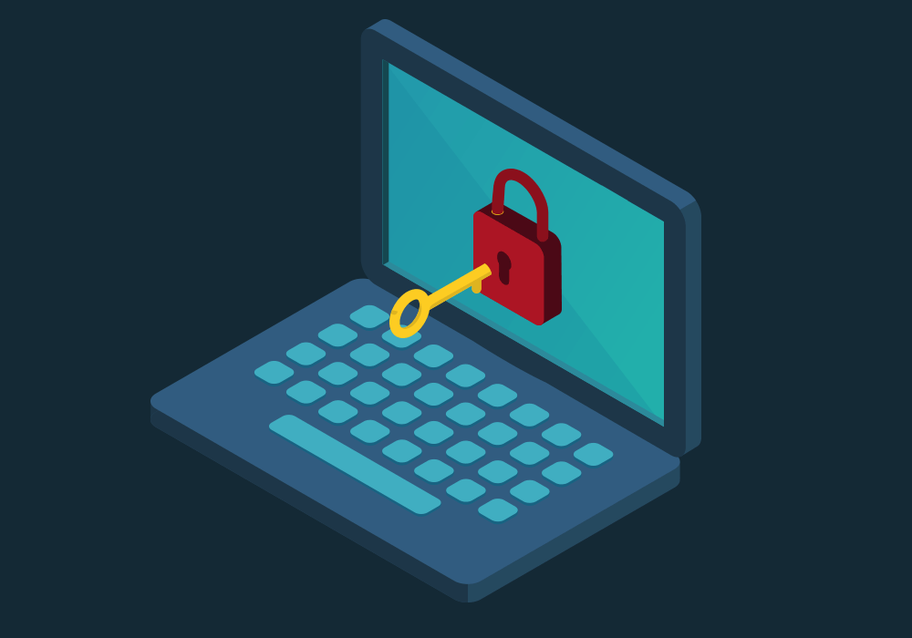

La ciberseguridad es el conjunto de prácticas, tecnologías y procesos diseñados para proteger sistemas, redes y datos de ataques cibernéticos.
Hoy en día, la protección de la información es fundamental debido a los constantes ataques cibernéticos que pueden comprometer datos personales y empresariales.
"La seguridad informática no es un producto, sino un proceso." - Bruce Schneier
Existen muchas amenazas en el mundo digital. Algunas de las más comunes son:
En la siguiente imagen puedes ver un ejemplo de un correo falso que intenta engañar a los usuarios:
Para mantenerte seguro, sigue estas recomendaciones:
el Los antivirus analizan archivos en busca de amenazas y los eliminan si detectan malware. Aquí tienes un GIF que muestra cómo funciona un análisis de seguridad:
Recuerda siempre estar informado sobre las nuevas amenazas cibernéticas.
Ciberseguridad: un desafío en constante evolución.